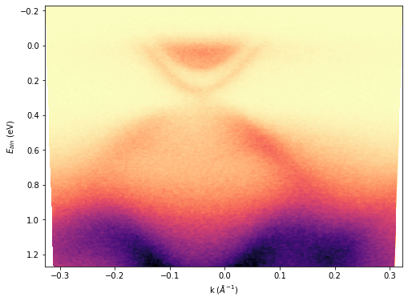

k-space conversion for single spectra
The k_conv function can convert two-dimensional Energy vs Theta data to Binding energy vs k (momentum). Here Binding energy below the Fermi energy is positive convention used.
import ARPES_Python_tools as arp
[data, energy, angle] = arp.load_ses_spectra('sample_spectra.txt')
[data_k, e_bin, k] = arp.k_conv(data, energy, angle, 16.67) # Fermi energy = 16.67 eV
# Plot image
import matplotlib.pyplot as plt
%matplotlib inline
# Above line is specific to Jupyter Notebook
plt.figure(figsize = (8, 6))
plt.imshow(data_k, origin = 'lower', aspect = 'auto', \
extent = (k[0], k[-1], e_bin[0], e_bin[-1]))
plt.xlabel("k ($\AA^{-1}$)")
plt.ylabel('$E_{bin}$ (eV)')
plt.set_cmap('magma_r')
plt.show()
Which would produce a plot like this:

k-space conversion for 3D Fermi map data
Similarly, we can convert three dimensional (Energy, theta, phi) Fermi map data to k-space by using k_conv3D function.
[data, energy, theta, phi] = arp.load_ses_map('sample_map_data.zip')
[data_k, e_bin, kx, ky] = arp.k_conv3D(data, energy, theta, phi, 16.67)
# Fermi energy = 16.67 eV
Depending on the size of data and computing power, the program might take few minutes to complete the calculations.